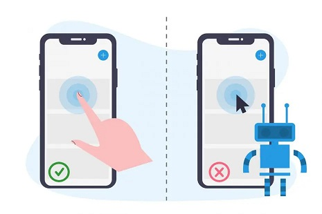

Projeto 1 - Detecção de Fraudes no Tráfego de Cliques em Propagandas de Aplicações Mobile

Descrição do projeto:
O risco de fraude está em toda parte, mas para as empresas que anunciam online, a fraude de cliques pode acontecer em um volume avassalador, resultando em dados de cliques enganosos e dinheiro desperdiçado. Os canais de anúncios podem aumentar os custos simplesmente quando pessoas ou bots clicam nos anúncios em grande escala, o que na prática não gera o resultado esperado. Com mais de 1 bilhão de dispositivos móveis em uso todos os meses, a China é o maior mercado móvel do mundo e, portanto, sofre com grandes volumes de tráfego fraudulento.
A TalkingData, a maior plataforma de Big Data independente da China, cobre mais de 70% dos dispositivos móveis ativos em todo o país. Eles lidam com 3 bilhões de cliques por dia, dos quais 90% são potencialmente fraudulentos. Sua abordagem atual para impedir fraudes de cliques para desenvolvedores de aplicativos é medir a jornada do clique de um usuário em todo o portfólio e sinalizar endereços IP que produzem muitos cliques, mas nunca acabam instalando aplicativos. Com essas informações, eles criaram uma lista negra de IPs e uma lista negra de dispositivos.
Objetivo: O projeto tem como objetivo construir um modelo de aprendizado de máquina para determinar se um clique é fraudulento ou não, utilizando linguagem R e o dataset em anexo no repositório.